| 01 00:00.00 3.2s cut |
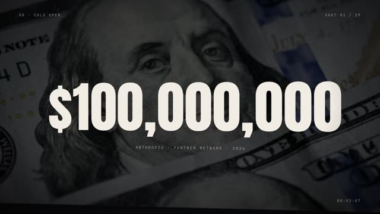 |
（无口播）$100,000,000 砸进画面 镜头从 z-300 推到 +180，同时 Y 轴 -14°→6° 摇；$ 数字逐字从纵深 900px 飞入 + 景深虚化归零；第 1.0s 落定震屏 + 0.18s 闪白。底：钱币视频压暗虚化。 |
| 02 00:03.20 3.4s whip |
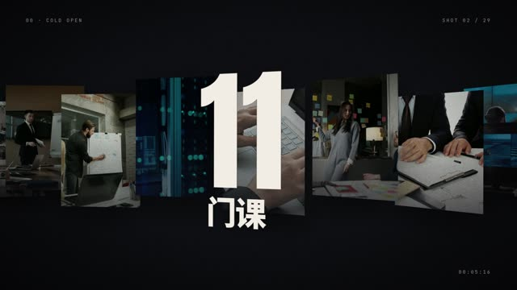 |
（无口播）十一门课依次亮起 11 块竖屏视频卡排成 2400px 半径的弧形墙，镜头横移 1040px 并 ±18° 摇；卡片逐张从下方 260px 升起（间隔 90ms）。「11」挤出立体字 0.9s 由 1.5 倍 snap 到位。 |
| 03 00:06.60 3.0s whip |
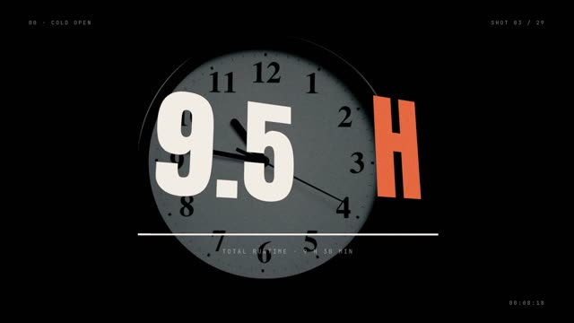 |
（无口播）九个半小时 钟表空镜压暗；「9.5」「H」分别从 z600 飞入，带 22° 斜角立体；底部进度条 0.6→2.2s 从左向右填满。 |
| 04 00:09.60 3.2s push |
（无口播）一万人 人群视频从 1.25 倍缓推到 1.05；数字 0→10,000 用 quart in-out 滚动 1.6s，到位震屏；「人」与英文副标随后淡入。 | |
| 05 00:12.80 3.6s whip |
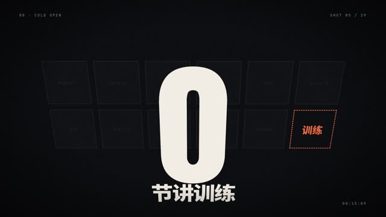 |
（无口播）十一门里，零节讲训练 俯 38° 看课程网格：11 张卡从 z-500 翻入（rx -90→0），第 12 格虚线红框「训练」；2.1s 巨大「0」从 3 倍砸下，网格压暗到 18%，闪白 + 强震。 纯动画 |
| 06 00:16.40 3.8s push |
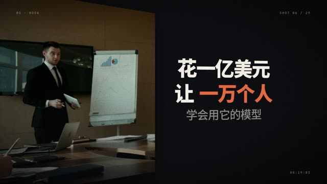 |
Anthropic 花一亿美元，说要让一万个人学会用它的模型。 左侧讲台视频卡 Y 轴 40°→22° 斜放，右侧三行字逐字 3D 翻入（rx -95°→0，35ms 间隔）。「一万个人」珊瑚色。 |
| 07 00:20.20 2.8s cut |
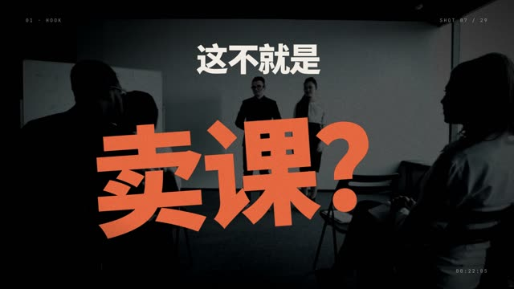 |
我第一反应是，这不就是卖课吗。 硬切。去饱和销售视频作底；「这不就是」上浮；「卖课？」珊瑚色立体字 0.5s 从 2.4 倍砸下，震屏 + 闪白。 |
| 08 00:23.00 3.8s whip |
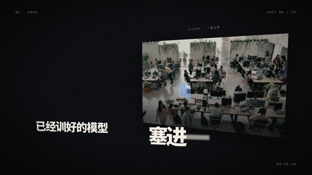 |
一节教你怎么训练模型的都没有。全是教你怎么把已经训好的模型，塞进一家公司里。 右侧办公室视频斜放 -20°；左侧蓝色 3D 立方体「LLM」自转，1.6→2.6s 沿弧线飞入办公室画面并缩小消失；「塞进一家公司」逐字 slam。 |
| 09 00:26.80 3.6s push |
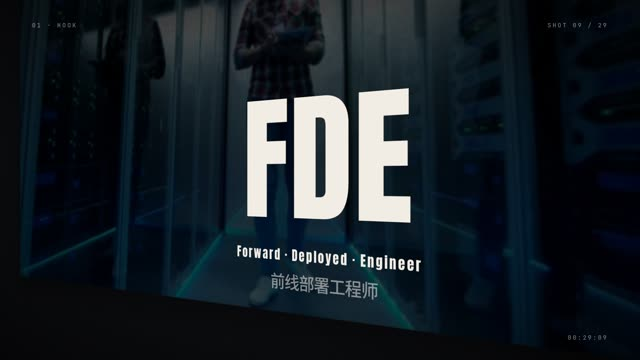 |
这个岗位有名字，叫 FDE，前线部署工程师。 景深虚化的工程师空镜；「FDE」30 层挤出立体字，镜头 -38°→30° 绕字环摇，展示厚度；英文全称、中文名依次上浮。 |
| 10 00:30.40 3.2s whip |
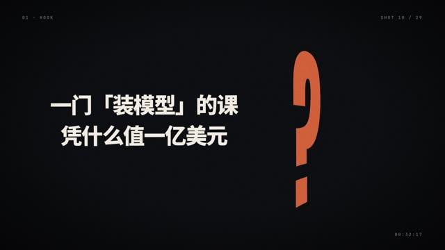 |
一门「装模型」的课，凭什么值一亿美元？ 右侧珊瑚色巨型「?」立体字缓慢自转 -80°→70°；左侧两行问题逐字翻入。 纯动画 |
| 11 00:33.60 4.0s push |
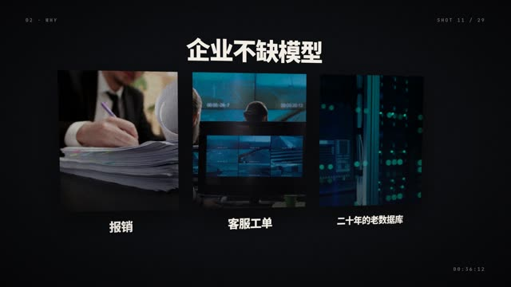 |
企业现在不缺模型。缺的是把它接进报销、客服工单、跑了二十年的老数据库的人。 三张视频卡（报销/客服/老数据库）从 z-600、ry-70° 依次翻转落位成扇形，间隔 0.25s；顶部标题翻入。 |
| 12 00:37.60 4.2s cut |
AI 的产出单位不是模型，是被改写的流程。 金句镜：镜头从 z-900 长推到 +120 穿过文字层。「不是模型」被一条白线 1.2s 划掉，「是被改写的流程」珊瑚立体字从 1.8 倍 snap，轻震。 纯动画 | |
| 13 00:41.80 3.4s whip |
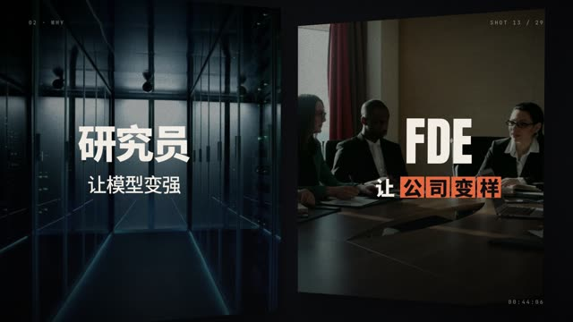 |
研究员让模型变强，FDE 让公司变样。 左右分屏：机房（冷）vs 会议室（暖），右侧卡从 -90° 翻开；「FDE」0.8s slam，「公司变样」反白高亮。 |
| 14 00:45.20 4.6s push |
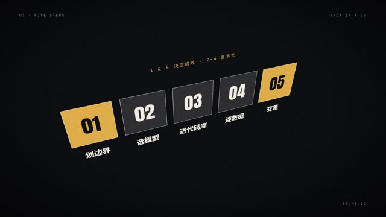 |
五个步骤。但先说清楚，五步不是并列的——第一步和第五步决定成败，中间三步是手艺。 俯 58°→34° 看五根柱：每根 back 缓动弹起，高度递增；第 1、5 根金色顶面标出关键步；2.2s 顶部注释。 纯动画 |
| 15 00:49.80 3.8s cut |
第一步，划边界。哪些活全给 AI，哪些人机配合，哪些老老实实写死。 「01」金色立体字 snap 进场；三张奶油色卡片（Auto/Copilot/Rule）从 z-600 依次飞到右侧并斜 -8°。 | |
| 16 00:53.60 3.0s whip |
最省事的那一步，通常也是出事的那一步。 纸堆视频 1.6 倍速作底；「出事」珊瑚色，整行 slam 落下 + 震屏。 | |
| 17 00:56.60 3.8s push |
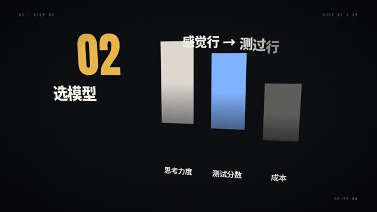 |
第二步，选模型。先把思考力度调高试一遍，跑通了，再换便宜的小模型。 三根柱状条：思考力度、分数先涨，成本 2.4s 后回落（切小模型）；顶部「感觉行 → 测过行」。 纯动画 |
| 18 01:00.40 4.0s cut |
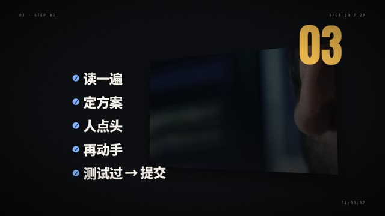 |
第三步，进代码库。读一遍、定方案、人点头、再动手、测试过才提交。 代码屏视频斜 -24° 置后；五个 ✓ 步骤从 z300 逐条翻落（间隔 0.42s）。 |
| 19 01:04.40 2.4s cut |
规矩死板得要命。但是代码库这种地方，死板就是安全。 硬切、无呼吸：巨型「死板」从 1.4 倍 snap，下方「就是 安全」反白。节奏刹车镜。 纯动画 | |
| 20 01:06.80 4.2s push |
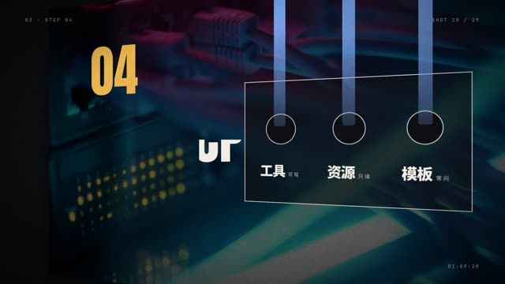 |
第四步，连数据。MCP 当插座：能改的做成工具，只读的做成资源，常问的做成模板。 光纤视频作底；「MCP」立体字 + 右侧插座面板；三根蓝色插头 1.1/1.55/2.0s 依次从 z400 snap 插入，每插一次小震。 |
| 21 01:11.00 4.4s cut |
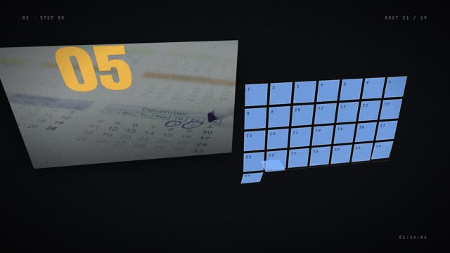 |
第五步，交差。这一周最难。但是熬过头三十天，这个流程就真的换了主人。 日历视频置后；35 格日历逐格翻面（rx 180°）变蓝表示一天天熬过，1–30 翻完、31–35 留灰；「头 30 天」slam。 |
| 22 01:15.40 4.0s push |
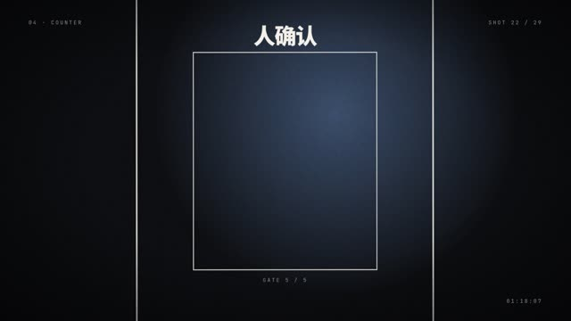 |
可是九个小时看完，不等于你会做。课里每一步都写着「人确认」。 镜头 4s 内向纵深推进 2800px，穿过 5 道「人确认」门框（隧道感），冷色光晕扫过。 纯动画 |
| 23 01:19.40 4.0s cut |
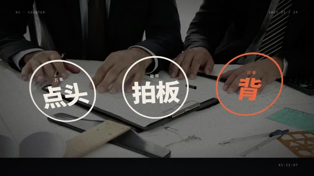 |
方案要人点头，验收要人拍板，出了事是人背。 签字视频作底；三枚印章（点头/拍板/背）从 z700 依次砸下（间隔 0.9s），每枚震屏，第三枚珊瑚红。 |
| 24 01:23.40 3.4s whip |
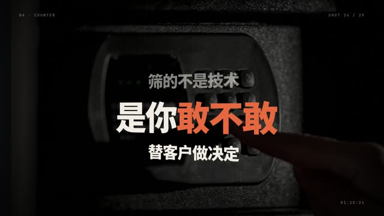 |
所以这门课真正筛的不是技术，是你敢不敢替客户做决定。 保险柜空镜；「敢不敢」大号翻入，上下两行细字收住。 |
| 25 01:26.80 4.4s push |
谁的插座先被焊上，后来的模型就顺着谁的插座插。这更像一次标准之争。 焊花视频 + 暖色漏光；左上标注「我的判断」；「标准之争」立体字 2.3s 砸下 + 闪白。 | |
| 26 01:31.20 3.8s cut |
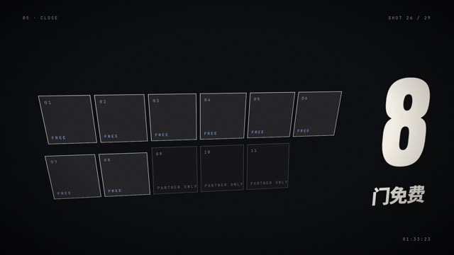 |
十一门里，偏交付的三门只对合作伙伴开放。核心八门，公开免费。 11 张课卡俯视排开，前 8 张抬起（rx -14°）标 Free，后 3 张暗显 Partner only；右侧「8」立体字 snap。 纯动画 |
| 27 01:35.00 3.8s whip |
然后问第二句，这句更难：谁敢在那张验收单上签字。 签字特写视频大面板缓摇；「签字」2.2 倍 snap，右侧珊瑚色光标闪烁（像等你签）。 | |
| 28 01:38.80 4.6s push |
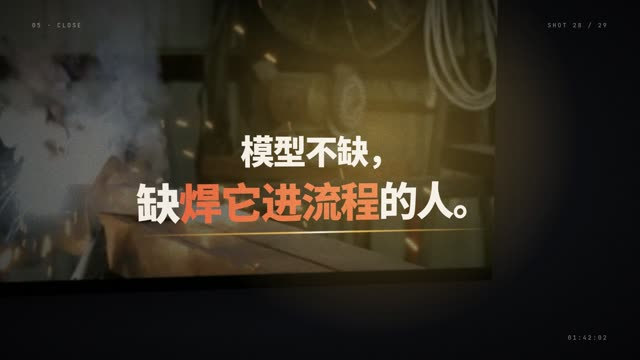 |
模型不缺，缺焊它进流程的人。 焊花虚化底，镜头从 +300 拉远到 -350；两行金句逐字翻入；1.9s 一道金色焊缝光带从中心向两端烧开。 |
| 29 01:43.40 4.0s cut |
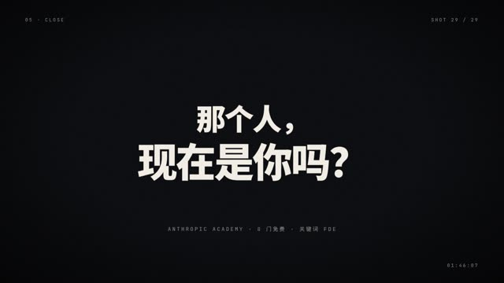 |
那个人，现在是你吗？ 留白结尾：两行字慢上浮，2.2s 出关键词提示，3.3s 起全画面淡出到黑。 纯动画 |